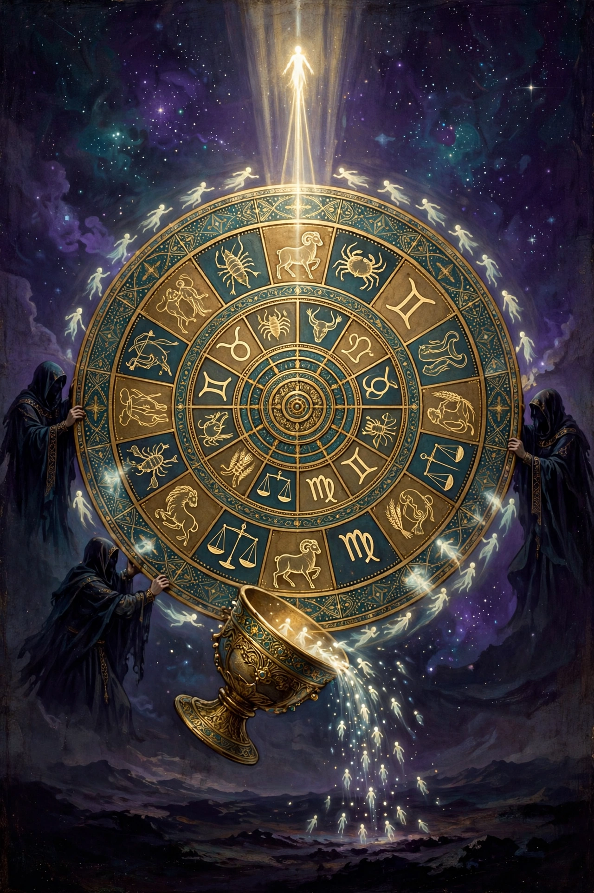

What the books say about reincarnation — and the news is harder and better than you've heard. Coming back is real. Coming back is also the prison. The whole point of the keys is getting off the wheel for good.

The Apocryphon of John says it in one breath: the soul that never wakes is handed over to the powers, bound in chains of forgetfulness, and cast into a body again — back into the prison. And it adds a hard edge: the soul that knew and turned away fares worse than the one that never knew.
So in this map, reincarnation is not a comforting "we all get another try." It is the sound of the prison door closing behind you — again.
The Pistis Sophia gives the machinery. When an unawakened soul exits, the archons' servants prepare for it the cup of forgetfulness — a drink made, the book says, from the seed of wickedness — and the soul drinks, forgets everything, and is thrown into a new body. That cup is their whole explanation for why nobody remembers the Light, or any life before this one.
The same book says the body you are thrown into is fitted to the life you lived — the kind of body, the kind of birth, matched to your deeds. Not by a fair judge, though. By jailers. That is the difference from karma as the East teaches it: this is not an impersonal law of balance. It is administered by the wardens, and the wardens rig it — the system is built so the wheel keeps turning.
And the wheel itself is run by fate — the stars. The archons of the fate-sphere turn the zodiac like a mill, and as long as you are under their names and their stars, you stay on it.
🪨 Body People who never wake: back around, every time.
🌗 Soul People: back around too — until the life where they choose the call and hold onto it. The Middle Rest is where they wait between the last turning and the gathering.
✨ Spark People who have truly woken: done. The mysteries and the seals break the wheel's claim — the archons can't recast a soul that knows their names, because it passes up through the gates instead of falling back down into the mix. For them, death is a one-way door, walked once.
One severe note the Pistis Sophia insists on: there is a limit. A soul that received the mysteries and threw them away again and again can be refused further returns — cast instead toward the outer darkness. The books treat chances as real, but not endless.
Which makes this life worth more, not less: the keys exist so that this can be the last time you ever need them explained to you.
Here is the hinge of the whole system: the awakened soul keeps its memory. Memory is what gnosis is. The cup of forgetfulness exists precisely because the wardens need you to forget — a soul that arrives at death awake does not drink, and it goes up knowing its name, its road, and its people.
Forgetting is not what death does to you. Forgetting is what the prison does to you, at birth and after death both, if it can. The ones in the Middle Rest know each other. Nobody there is wandering around wondering who they were — and that is part of what makes it rest.
The books don't use our word "ghost," but they have the thing itself, in three kinds:
🏠 Souls that haven't moved on. A soul that dies asleep and tangled can linger near its life — its house, its unfinished business — before the wardens collect it for the cup and the wheel. What people call a haunting, this system would mostly call a soul that hasn't started the road yet.
🌤️ Souls in the waiting places. The dead in the Middle Rest and in the correction places of the aeons are real, aware, and still themselves — not gone, just located somewhere you aren't.
🎭 Impostors. This is the warning label, and the texts are serious about it: the in between is patrolled by the archons and what the Apocryphon calls the counterfeit spirit, and mimicry is their favorite tool. A voice that sounds exactly like the one you lost is, in this teaching, the easiest thing for them to fake — because grief will do most of the work for them.
So can you contact the ones who crossed over? Honestly, from these books: there is no séance in them. No ritual for calling the dead back down, and real suspicion of anything that answers too easily. And there is a logic to it — the ones who are awake are beyond the toll gates, past the wardens' jurisdiction entirely; nobody down here summons a soul out of the Treasury of Light like calling someone back from the next room. The road only runs one way.
What the books have instead of contact is presence in the other direction: prayer aimed at the Father and the Mother, and the promise that the waiting ones wait with you in view — Sophia hears, the Rest holds your people, and the meeting is scheduled even if the phone line isn't open. And the one great exception the whole Pistis Sophia is built on: the risen Revealer himself, teaching his own for years after the cross — proof, in their telling, that the truly awake can still speak across. But he comes. He isn't summoned.
So: your dead are not lost, not blank, and not far in the way that matters. In this teaching you don't reach them by calling down. You reach them the way the Mother does — by remembering them accurately, teaching what you know, and walking the road they'll be waiting at the top of.
Sleep is the master image of these books: this whole life is described as a sleep and a drunkenness, and the call that saves is literally "Awake, O sleeper." So dreams matter here. Sleep is when the body's grip loosens and the soul is a little more itself, a little further out of the tomb — which is why, in the Hymn of the Pearl, the letter from home reaches the prince while he is asleep in Egypt. The Light uses the night, because the wardens' noise is quieter then.
So what is a dream of a loved one who has passed? The map sorts it the same way it sorts ghosts — three possibilities:
💭 Your own soul, remembering. Sometimes the dream is simply your memory doing its holy work — the soul visiting its own country. That doesn't make it "just a dream." In this teaching, memory itself is sacred.
🌤️ A real nearness. The living soul in sleep wanders freer, and the waiting places are not as far as they look from here. The books never mock the idea that the Rest can lean close in a dream — the Mother herself calls to her children in the night in these stories. A meeting at the border, in the one country where both of you can stand.
🎭 The impostor, again. The warning still applies — the texts knew dreams could be tampered with, and the counterfeit spirit can wear a beloved face in a dream as easily as anywhere.
And here is the test the books would hand you — not "was it vivid?" but "what did it leave behind?" A true visit leaves peace. Clarity. Love that steadies you for this life, and a pull toward the Light. A counterfeit leaves fear, obsession, flattery, or a longing that drags at your own life — and it often asks something of you. The real ones never beg, threaten, or bargain. They just come, and you're glad, and you wake up more yourself.
So: don't dismiss those dreams, and don't chase them either. Receive the ones that leave you at peace the way you'd receive a letter — because in the oldest story they told, that's exactly how the rescue started: a message from home, delivered to a sleeper, saying remember who you are.